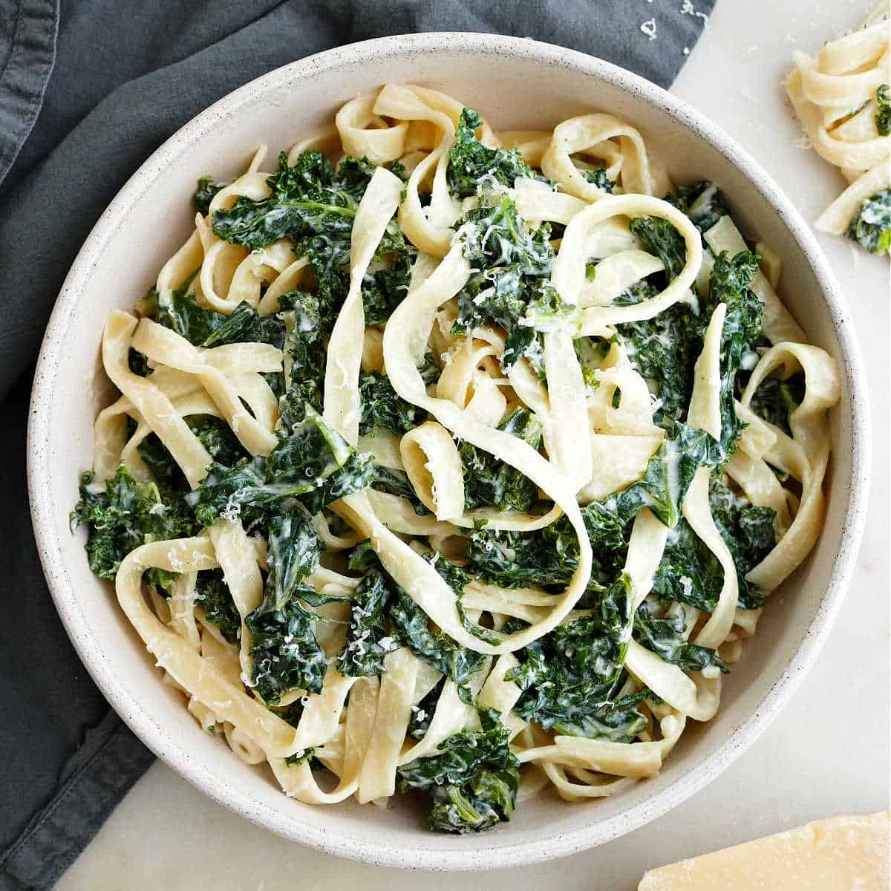

Creamy pesto and kale pasta

Description
Enjoy this creamy pesto and kale pasta as a tasty dinner.
Ingredients
- 1 tbsp rapeseed oil
- 2 red onions thinly sliced
- 300g kale
- 300g wholemeal pasta
- 4 tbsp reduced fat soft cheese
- 4 tbsp of fresh or jar pesto
Steps
- Heat the oil in a large pan over a medium heat. Fry the onions for 10 mins until softened and beginning to caramelise.
- Add the kale and 100ml water, then cover and cook for 5 mins more, or until the kale has wilted.
- Cook the pasta following pack instructions. Drain, reserving a little of the cooking water.
- Toss the pasta with the onion mixture, soft cheese and pesto, adding a splash of the reserved cooking water to loosen, if needed. Season.
- Serve and enjoy!